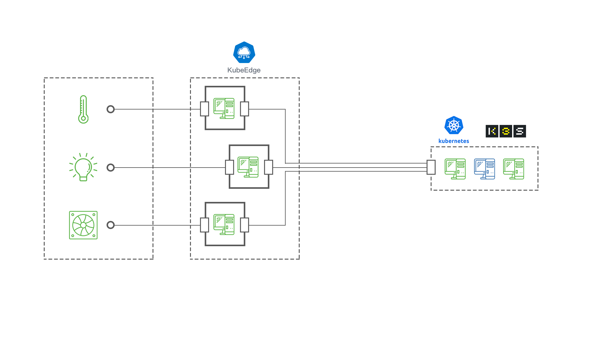

KubeEdge : A Kubernetes Native Edge Computing Framework
Selleslagh Tom
TIM, CETIC, November 13, 2019
Agenda
Background Knowledge |
|||
Edge Computing | |||
KubeEdge |
|||
Feedback |
|||
Perspectives |
|||
Conclusion |
background Knowledge
Cluster
A group of similar things that are close together, sometimes surrounding something
Cambridge dictionary
A number of similar things that occur together
merriam-webster dictionary
Cambridge dictionary
A number of similar things that occur together
merriam-webster dictionary
Orchestration
Plan and organize something carefully and sometimes secretly in order to achieve a desired result
Cambridge dictionary
Cambridge dictionary
Kubernetes (K8S)

system for automating deployment, scaling, and management of containerized applications
kubernetes.io
kubernetes.io
Ressources
Kubernetes :
- Pods
- ReplicaSet
- Deployement
- DaemonSet
- Job (batch API)
- CronJob (batch API) ...
availables objects:
kubectl api-resources
Custom :
- Workflow (Argo Project)
- Device (KubeEdge)
- Home made ...
Summary
|
||||
| Kind of workers have to do some tasks | Increase efficiency with a manager | Same aspect with a Container As A Service architecture |
Cloud vs Edge Computing
Cloud Computing
A network of remote servers hosted on the Internet which can store, manage, and process data, rather than using a local server or a personal computer
IGI-Global.com
IGI-Global.com
Edge Computing
Definitions
Data processing and storage takes place at or near the edge, a boundary between digital and physical entities.
This nearness will be defined by the system's requirements.
ISO/IEC JTC 1/SC 38
This nearness will be defined by the system's requirements.
ISO/IEC JTC 1/SC 38
Edge Computing
Challenges
- Heterogeneity
- Security
- Latency
- Lack of mobility support
- Location-awareness
- Resilience ...
Edge Computing
Resilience challenge resolving
KubeEdge
KubeEdge Architecture
CloudCore - EdgeCore

- Communication between cluster and edge node: WebSocket
- Specific process on each side
KubeEdge Architecture
EdgeSite
- Communication between cluster and edge node: K8S Api
- Process on edge side
EdgeNode
Architecture
EdgeNode
Modules Roles
| ServiceBus acts as an interface for sending/receiving messages over a WebSocket. | ||
| MetaManager is the message processor between edged and edgehub. It’s also responsible for storing/retrieving metadata to/from a lightweight database(SQLite). | ||
| DeviceTwin module is responsible for storing device status, dealing with device attributes, syncing device status to the cloud and syncing the device twin information between edge and cloud, ... | ||
| Eventbus acts as an interface for sending/receiving messages on mqtt topics. |
feedback
Roll up yours sleeves, you will have to do everything :
- Download binary
- Configure
- Launch Process
- Create sytemd services.
- Add CustomRessource
- Create Driver for the device
- Create MQTT mapper
- Add Device on both side
Perspectives
Conclusion
28 Sep 2018Credits
- https://www.flaticon.com/authors/smashicons
- https://www.flaticon.com/authors/monkik
- https://www.flaticon.com/authors/good-ware
|
Aéropole de Charleroi-Gosselies Avenue Jean Mermoz 28 B-6041 Charleroi - Belgique
|
KubeEdge : A Kubernetes Native Edge Computing Framework🖨Print this presentation
|